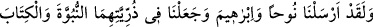
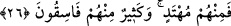

“Şübhesiz Allah kuvvetlidir, dâimâ üstündür.” Yok etmeyi murad ettiği kimseleri
helâk etme kuvvetine sâhiptir. Başkasının yardımına ihtiyacı yoktur. Allah’ın onlara
cihâdı emretmesi, yalnız onların faydalanmaları ve O’na itâatlerinden dolayı sevâba hak
kazanmaları içindir. Kuvvet, bünyenin sağlam ve dayanıklı olmasından ibâret olup
zayıflığın zıddıdır. Allah’a nisbetle kuvvet, kudret mânâsınadır. Kudret de, hayat
sâhibinin kendi irâdesiyle bir işi yapma veya yapmama imkânına sâhip olmasıdır. İzzet
ise her şeye galip ve üstün olmaktır.
Zerrûkî demiştir ki: Kavî/kuvvetli olan fiillerinde, sıfatlarında ve zâtında zayıflık
olmayan, kendisine gevşeklik, yorgunluk, âcizlik, kusur gibi noksanlıklardan hiç biri
bulunmayan kişidir. Esmâ-yı hüsnâdan biri olan bu yüce ismin hâssası, vücudda
kuvvetin görünmesidir. Zayıf himmetli bir kişi bu mübârek ismi okuduğunda mutlaka
kuvvet bulur. Bünyesi zayıf kimse okuduğunda o da güç sâhibi olur. Şâyet bir mazlum
zâlimin mahvolması niyetiyle bin defa okuyacak olursa bu maksadı hâsıl olur ve onun
işini bitirir.
Azîz ism-i celîlinin hâssası, varlıkta zenginliğin ve izzetin mânen veya şeklen ortaya
çıkmasıdır. Kırk gün kırkar defa bu ism-i celîli zikreden kimseye Allah Teâlâ yardım
eder ve onu azîz kılar. Ve halkından hiç birine muhtaç etmez. el-Erbaînü’l-İdrîsiyye’de
şöyle kaydedilmiştir: Ey önüne geçilemeyecek sonsuz kudret sâhibi, istediğini şiddetle
men eden, emrini yerine getirmeğe kadir olan ve hiç benzeri olmayan!
Sühreverdî şöyle demiştir: Bir kimse yedi gün ara vermeden, her gün bin defa bu
ismi celîli okursa düşmanı helâk olur. Düşman askerinin yüzüne karşı ve eliyle onlara
işâret ederek yetmiş kez okursa onlar bozguna uğrarlar.
26. Andolsun ki biz, Nûh’u ve İbrâhim’i gönderdik, peygamberliği de kitabı da
onların soyuna verdik. Onlardan (insanlardan) kimi doğru yoldadır; içlerinden
birçoğu da yoldan çıkmışlardır.
“Andolsun ki biz Nûh’u” Kabil oğullarından olan kavmine insanlığın ikinci babası
olan Hz. Nûh’u “ve İbrâhim’i gönderdik” Onun, Nemrud ve ona tâbî olanlardan
teşekkül eden kavmine peygamber olarak gönderdik. Allah Teâlâ şereflendirmek için
özellikle bu iki peygamberin risâletlerini zikretti. Ayrıca ikisi de ilk peygamberlerdir ve
peygamberlerin babalarıdır. Dolayısiyle bütün insanlar Hz. Nûh’un (a.s.)
çocuklarındandır. Arap ve İbrânîlerin/Yahudilerin hepsi de Hz. İbrâhim’in (a.s.)
çocukları ve nesilleridir.
“Peygamberliği de kitabı da onların soyuna verdik” Nesillerinden Hûd, Sâlih,
Mûsâ, Hârûn, Dâvûd ve diğerleri gibi bir kısmını peygamberlikle görevlendirdik ve